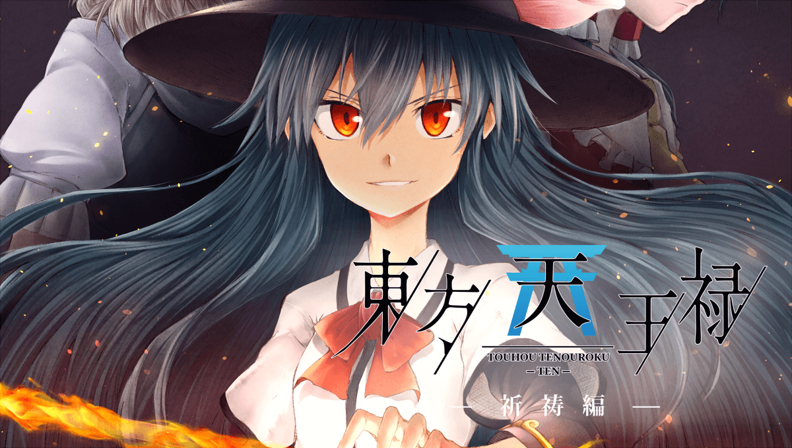

その「祈り」は、人の夢 …
― その「祷り」は、天の果て
― その「祷り」は、天の果て
風の草原が送る「東方天王禄シリーズ」第二弾。
一年ぶりとなるシリーズの新作！比那名居天子を主人公とし、独自の解釈と設定を元に紡がれる物語。メインシナリオとなる【天】における最初の物語「祈祷編」を、博麗神社例大祭14にて頒布！また、本編も全ページ公開！風の草原の新作を、ぜひお楽しみください!!
一年ぶりとなるシリーズの新作！比那名居天子を主人公とし、独自の解釈と設定を元に紡がれる物語。メインシナリオとなる【天】における最初の物語「祈祷編」を、博麗神社例大祭14にて頒布！また、本編も全ページ公開！風の草原の新作を、ぜひお楽しみください!!